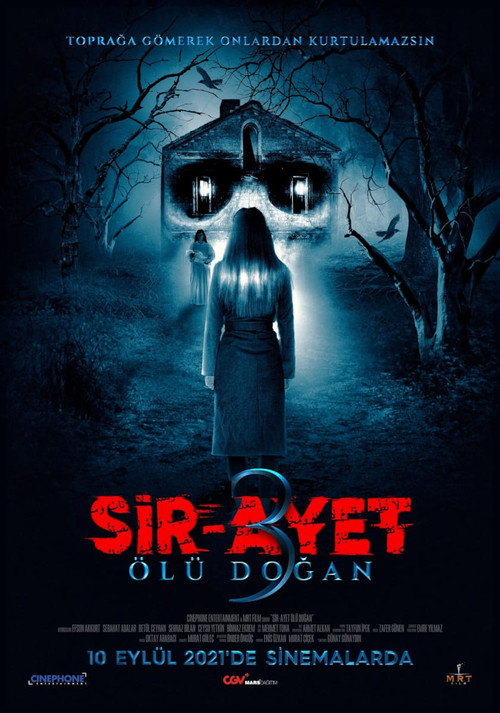

Sir-Ayet: Ölü Doğan (2021)
الوصف: Hazal is a young doctor working in a clinic. Having lost her mother five years ago, Hazal often sees her mother in her dreams in a terrifying state. At the same time, Hazal begins to hear strange noises in her home, which take a psychological toll on her. This unease does not go unnoticed by her friend Şenay, who is also a doctor. One day, while visiting her mother, Hazal confides in Şenay about her problems. Upon hearing this, Şenay's mother advises Hazal to seek guidance from an elderly healer who is knowledgeable in such matters. After receiving advice from the healer, Hazal embarks on a terrifying journey with no return.
الممثلون
- Efsun Akkurt
- Sebahat Adalar
- Betül Ceyhan
- Şehnaz Dilan
- Ceysu Yetkin
- Binnaz Ekren
المخرج: Günay Günaydın
المنتج: غير متوفر